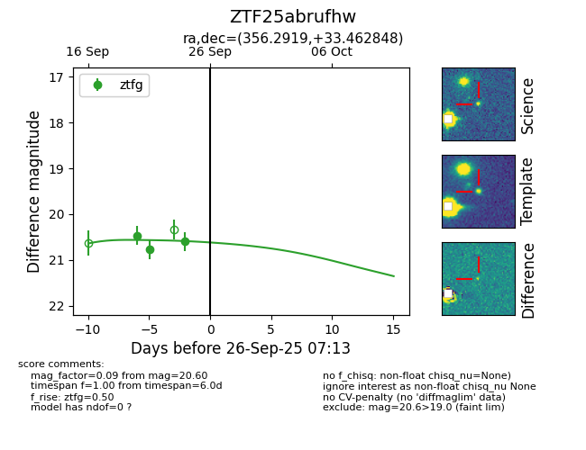
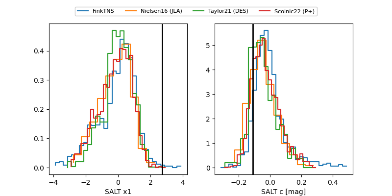

FINK: ZTF25abrufhw
Lasair: ZTF25abrufhw
ALeRCE: ZTF25abrufhw
ZTF25abrufhw (ztf,fink)
equatorial (ra, dec) = (356.2919,+33.46285)
galactic (l, b) = (107.3901,-27.40097)


last ztfg=20.60
3 ztfg detections